Embedded Files
Now accepting applications for Summer 2027 High School Exchange to Japan AND Summer 2027 APCC Exchange to Japan.

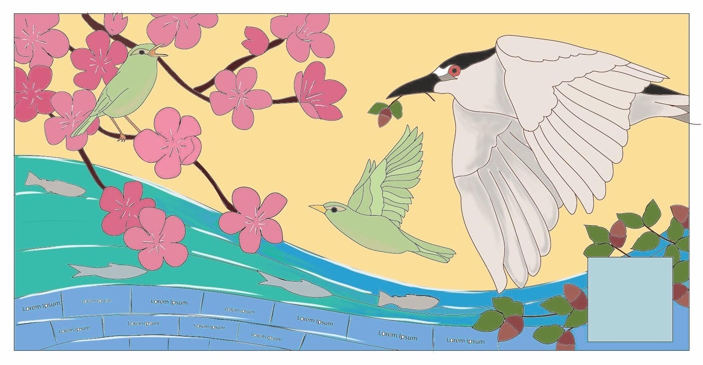
Compassion, Peace, and Community
celebrating 60 years of friendship between Oakland and Fukuoka
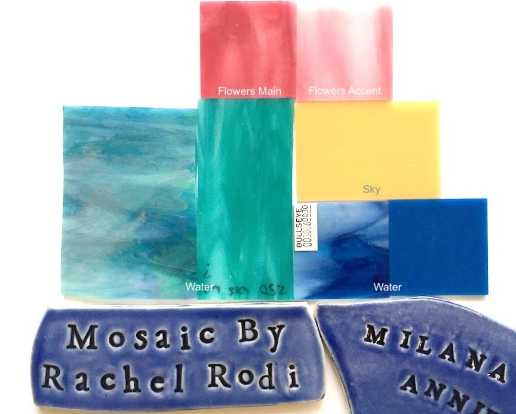
Design by Rachel Rodi and Guy Fuerte
Design by Rachel Rodi and Guy Fuerte
OFSCA’s Board of Directors selected Rachel Rodi Mosaics, a local artist with over 25 years of extensive experience designing and creating mosaic installations including public art with communities. Visit Rachel Rodi's website portfolio and more information.
10 design team members from Oakland, Japan, and youth from the Bay Area joined in their creative efforts to contribute to the overall design and symbolism of "Compassion, Peace, and Community" resulting in the design draft artwork above.
Story & Symbolism of the Art
Story & Symbolism of the Art
At sun rise, the black-crowned night heron carries a gift of an oak tree branch with acorn from Oakland who is accompanied in friendship by a Japanese bush warbler who have journeyed together. They are both serenaded by the bush warbler who guides them and brings them together in community and with compassion perched on a plum blossom tree.
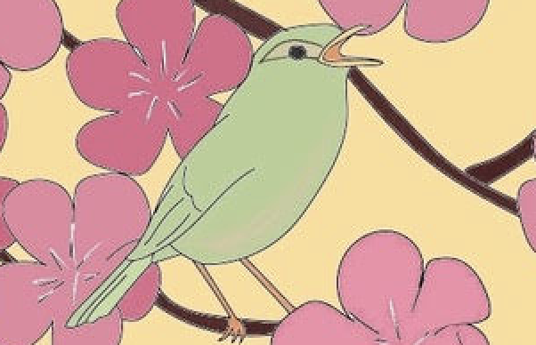
Japanese Bush Warbler
Japanese Bush Warbler
The Japanese Bush Warbler (Uguisu) is known for its song. This bird is often found in poetry and literature as a symbol of the spring revival, hope, and an end to the hard (winter) times. It is also called the "spring bird" and "poem reading bird". This bird is associated with the plum blossom as it is evocative of spring.
Plum blossom tree and Japanese bush warblers (uguisu) represent Fukuoka, Japan.
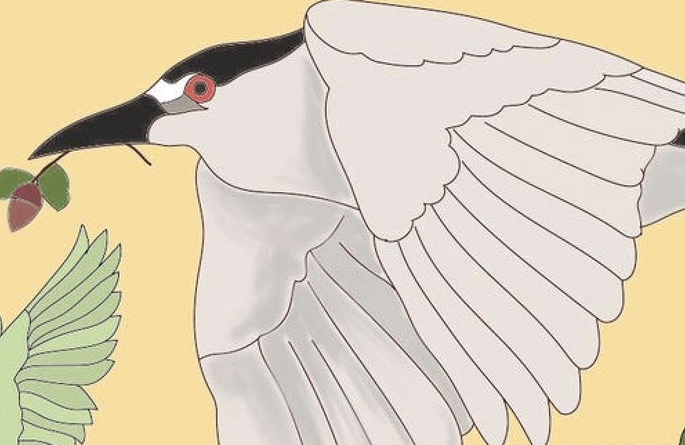
Black-crowned Night Heron
Black-crowned Night Heron
The black-crowned night heron, a watershed bird, is the official bird of Oakland in part due to petitions by the Oakland community and youth members.
It symbolizes resilience, adaptability, and resistant to displacement. “[It] serves as an excellent symbol for the City of Oakland given its bold personality and industrious lifestyle, and as a representation of our strong-willed, tenacious, and dynamic community which despite adversity and hardship always shows the strength and resiliency to rise and thrive” The City of Oakland resolution No 87702 C.M.S.
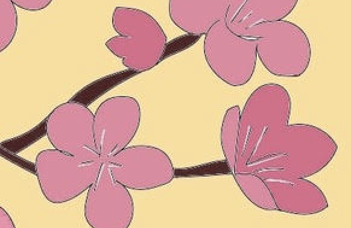
Plum Blossoms
Plum Blossoms
The plum blossom is a symbol of Fukuoka Prefecture and is famous in and around Fukuoka city.
The blossom arrives earlier than the cherry blossom when the air is still cold bringing the first glimpse of spring, new beginnings, resilience, and hope.
The blossom brings people & communities together to enjoy its beauty including some festivals and events.
Sipping tea and eating a special cake with the plum blossom symbol on it is a famous activity.
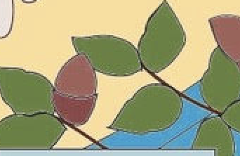
Oak Tree
Oak Tree
Oak tree with acorns and the black-crowned night heron represents Oakland
The oak tee is strong, enduring, wise, and its roots and branches are symbols of celebrating the diversity and strength in unity. It is also a symbol for life and dynamic growth and constant change.
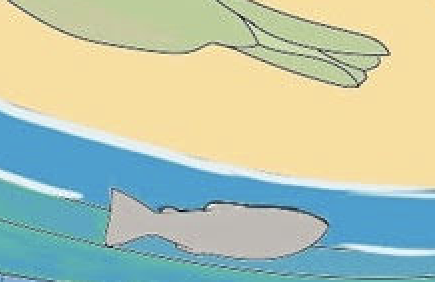
Water & Sky
Water & Sky
The water flows from both sides with gradients of color representing the two sides of the Pacific Ocean meeting and highlighting how water systems connect all communities and peoples together and unify us.
Fukuoka and Oakland are both port cities and water is essential. Both Oakland (Lake Merritt) and Fukuoka (Ohori Park) enjoy bodies of water in the middle of their cities.
The sky is a peaceful sunrise which is a celebration of new beginnings and clear skies for peace.
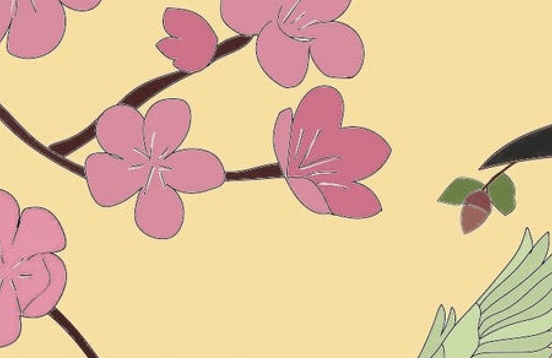
Acts of Friendship
Acts of Friendship
The friendship blossoms between the birds.
The act of carrying a gift represents the message and celebrates the significance of the culture of gift giving and good wishes. In peacemaking, compassion and community, everyone benefits.
The Japanese bush warbler is singing to welcome their friend from across the sea.
A Symbol of Community and Friendship
A Symbol of Community and Friendship
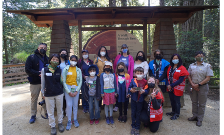
This project began three years ago led by JJ Kotler (OFSCA) with the goals of not only celebrating the 60-year friendship between our cities, but to be a community inclusive project building new and deepening existing relationships of people and organizations with OFSCA in Oakland and the Fukuoka Oakland Friendship Association (FOFA) in Japan.
Community participation and youth leadership was central to programming from concept and design to implementation. Design team members from the Oakland Bay Area and Japan joined in creative efforts exploring the personal and cultural significance of the message "Compassion, Peace, and Community" which translated into the artist's design by Rachel Rodi and Guy Fuerte. Prathana Pandey joined the team as a youth leader helping with outreach, concept, and design decisions, receiving additional mosaic training to become the mosaic assistant to Rachel Rodi for this project.
To deepen the symbolism in the mosaic mural and celebrate our connectedness to each other and nature, pebbles from Oakland, CA and Fukuoka, Japan were incorporated. Oakland residents (children ages 8-12, family members and adults) met in April 2022 to collect pebbles from Roberts Regional Park hosted by the East Bay Regional Park District. Fukuoka residents similarly participated in a pebble collection event along the Muromi River hosted by FOFA in January 2022 and sent the pebbles to Oakland to be incorporated. Mural classes, training, and community mural making days were sponsored by OFSCA and led by expert artists Rachel Rodi and Guy Fuerte.
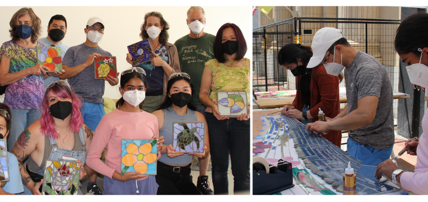
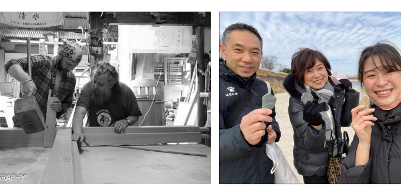
The Oakland Fukuoka Sister City Association is a 501(c)(3) non-profit organization Tax ID 94-2582130
Questions? OFSCAmural@gmail.com
Page updated
Report abuse